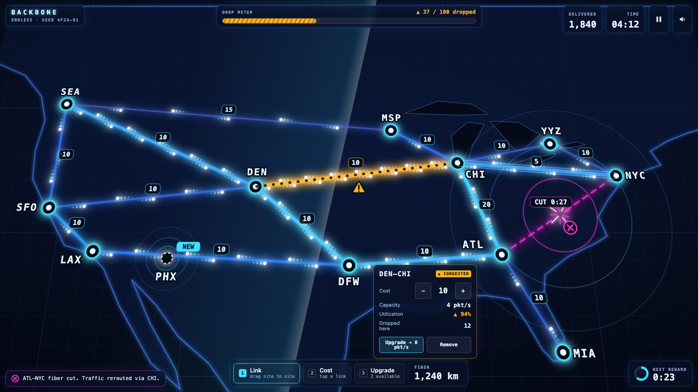
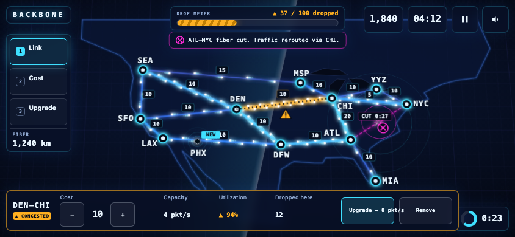

Backbone play screen mock
A static picture of the v1 play screen. Nothing is simulated: the numbers, pulse positions and the coastline are hand-placed placeholders. play.html is the same scene with motion: pulses, sweep, ripple and ping loop decoratively. Resize the window to see it reflow.
Desktop and stage, 1920 × 1080

Phone landscape, 844 × 390 (shown at actual pixel size)

State key: every color has a second cue
Light loadThin, dim indigo
BusyThicker, brighter cyan, more pulses
CongestedAmber, thickest, hatch pattern, warning triangle
Fiber cutMagenta, broken dashed line with a gap, cut icon, repair timer
New siteDashed ring, ping circles, NEW tag
Dark site (no path)Hollow grey ring with a magenta slash; not shown in the scene above